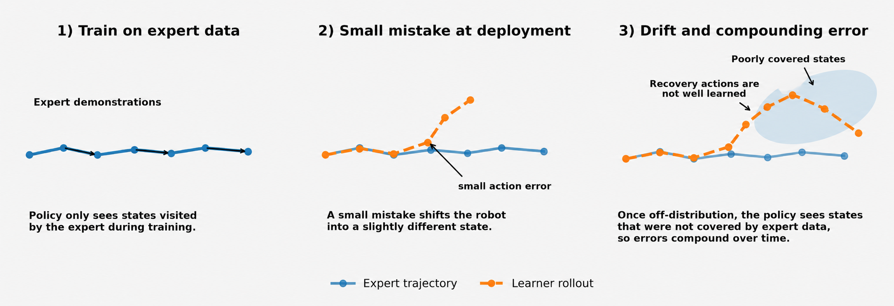
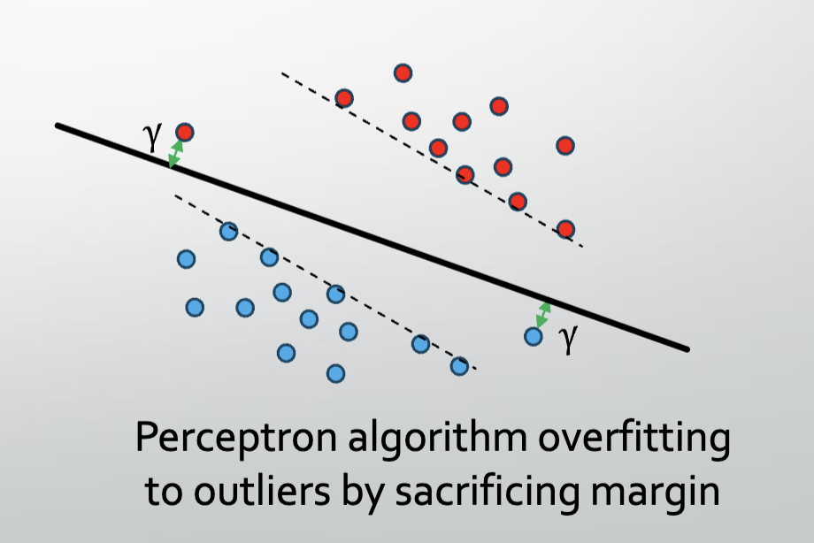
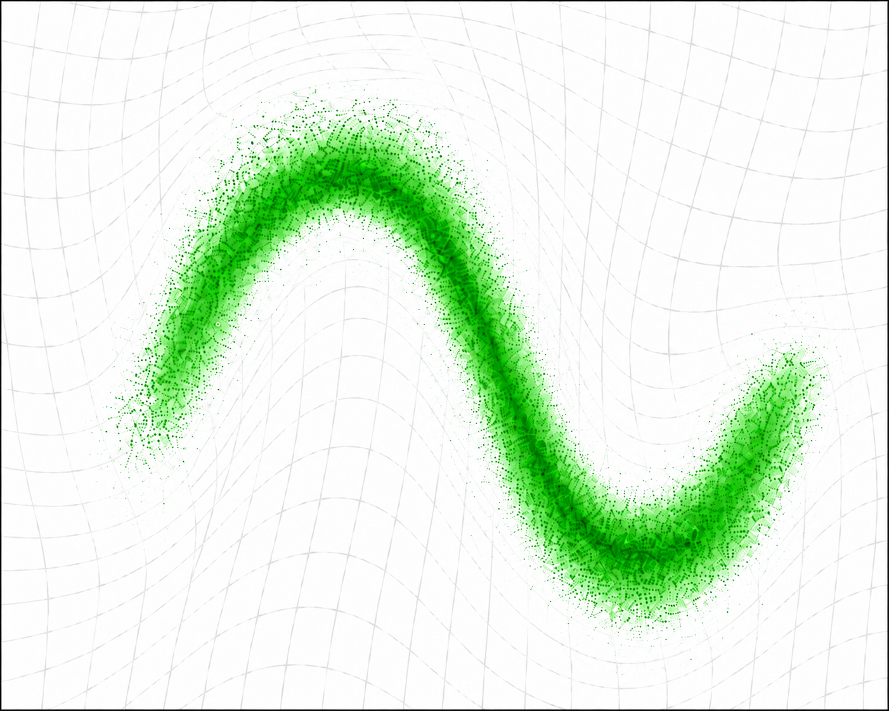
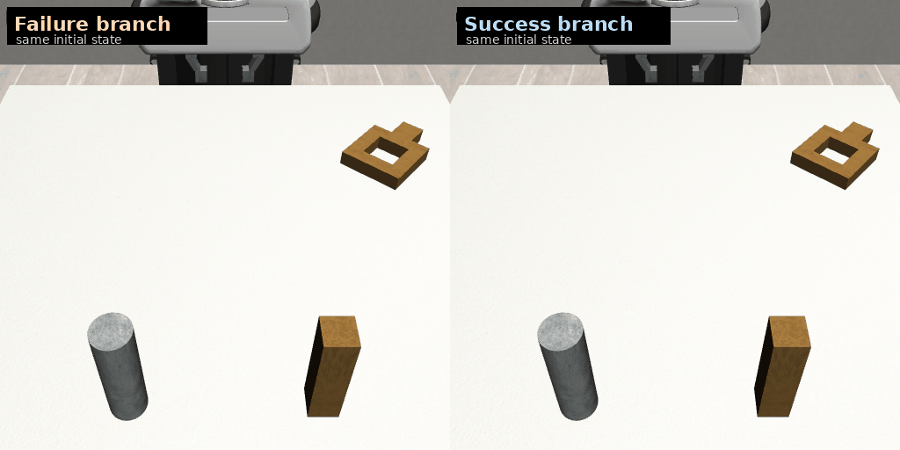
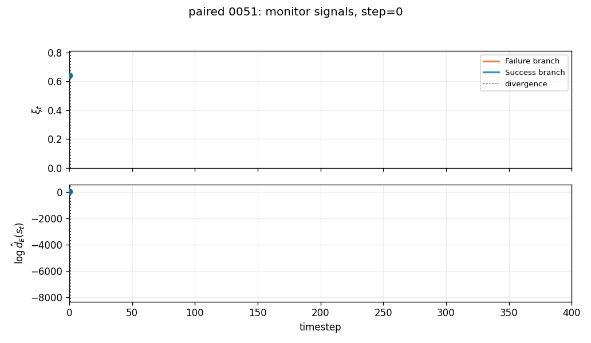
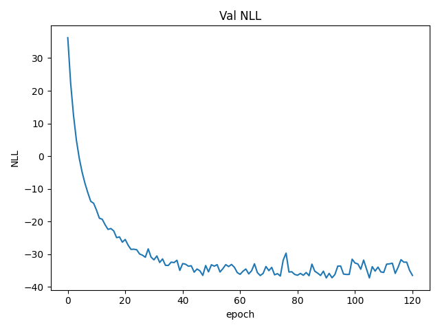
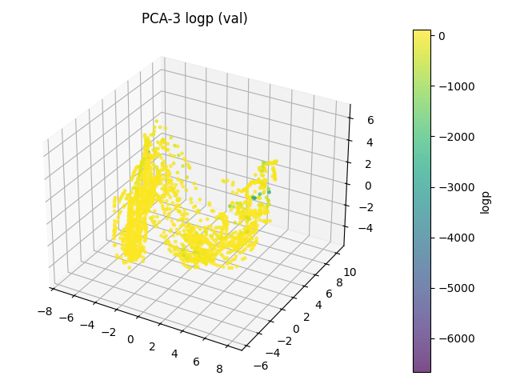
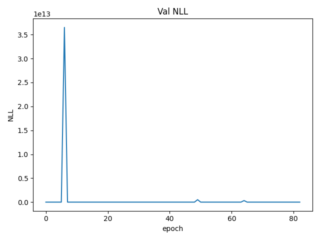
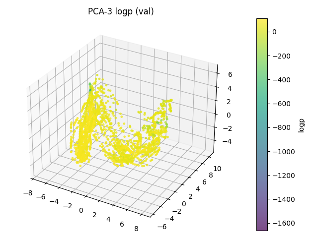

Focus 2 / offline imitation learning
Density-Informed Margin
Imitation Learning (DIM-IL)
Can we mitigate compounding error while preserving the simplicity of behavior cloning?
DIM-IL learns a support margin from fixed expert demonstrations. A one-step signal then helps the policy avoid actions predicted to drift away from those demonstrated states, while the same signal remains available as a runtime monitor.
01 / Behavior cloning and compounding error
A small mistake changes the states a policy sees next.
Behavior cloning (BC) is supervised learning on a fixed demonstration dataset. The mismatch appears during execution: the policy acts on states produced by its own earlier actions, so one error can carry it into regions where the expert data offers little guidance.

Interactive correction
Methods such as DAgger collect expert corrections on states visited by the learner. That direct feedback is useful, but online rollouts and human intervention can be expensive or risky on physical robots.
Purely offline alternatives
Model rollouts and distribution-matching methods address the same shift using fixed data, often with additional models or estimation objectives. DIM-IL looks for a smaller change to the BC training interface.
What if demonstrations supplied both actions to imitate and a margin against leaving their support?
02 / From matching to margins
Pointwise imitation becomes support-aware learning.
The analogy begins in supervised classification: a classifier can fit labeled examples while leaving little room at the boundary. A margin changes the objective. In imitation learning there is no class boundary, so DIM-IL treats expert-state support as the boundary to watch.

03 / DIM-IL in two stages
Estimate support, then shape behavior cloning.

Normalizing flowLearn a support score from demonstrations
Fit a normalizing flow to expert states, convert its estimated log density into a low-support potential, and train a one-step predictor on logged transitions. The predictor estimates whether a candidate action moves toward lower support. These components are fixed for policy training.
Low-support scoreV(s) = -β log dE(s) + c
One-step violationξ(s,a) = [f(s,a) - V(s) + κ]+
Higher V means lower estimated expert support. The violation grows when an action is predicted to increase that score beyond the margin.
Prefer actions that preserve support
The policy remains a supervised imitation model. Its BC loss is augmented with a soft penalty derived from the frozen one-step signal, so candidate actions predicted to drift farther from expert support receive less preference.
This is a local, learned signal rather than a guarantee that every long rollout stays in distribution. The penalty strength must balance support preservation against completing the task.
04 / Experimental setup and preliminary results
An early comparison on RoboMimic Square.
The initial test uses low-dimensional RoboMimic Square observations and a Diffusion Policy backbone. The table compares BC with DIM-IL across three matched seeds. It reports task performance alongside how often and how long rollouts occupy low-density states.
The values below are preliminary three-seed means from the supplied slides.
| Metric | BC (Diffusion Policy) | DIM-IL |
|---|---|---|
| Success rate higher is better | 0.800 | 0.840 |
| Rollout horizon lower is better | 197.72 | 186.20 |
| Low-density rate lower is better | 0.2802 | 0.2429 |
| Low-density dwell lower is better | 83.69 | 68.50 |
Success and support-drift metrics move in a favorable direction on this task. This is an initial result, not evidence of a general long-horizon guarantee.
05 / Analytics as a runtime monitor
The same support signal can be watched during execution.
The slides pair two rollouts from the same initial state with the evolving one-step violation and expert-state log-density. The traces help distinguish momentary threshold crossings from prolonged drift; neither signal alone is a complete measure of task success.


06 / Normalizing flow ablation
Which density model should define the margin?
The appendix compares RealNVP and MAF as Stage 1 density estimators. The validation-loss curves and PCA projections below are the original figures from those slides. They illustrate model and seed sensitivity in this setting, rather than a universal ranking of flow families.
RealNVP


MAF


In the current aligned three-seed pipeline, the longer draft uses RealNVP for the main certifier because it produced stable complete artifacts across seeds. The slide figures show representative training behavior, not an exhaustive ablation.